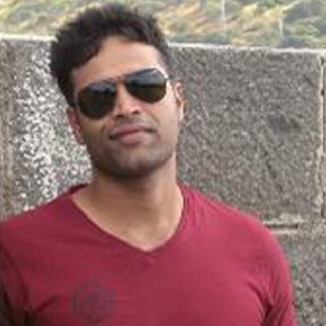
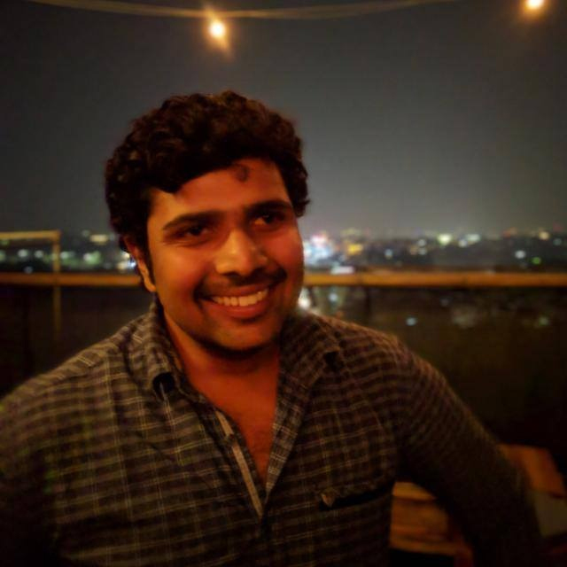

Pozhtoal, Sreedath Kuttan
He facilitated the complete development process and being a Guide throughout the development of this tool Also helped the team to avail all the infarsturcture requierd For this development. Under his supervision team have created This dashboard, keeping in mind for simplicity with resubaliity.
Sharma, Gaurav
Gaurav has led and managed this initiative from the Concept to design and Design to Development and development to delivery. He identified the pain points of using Jenkins and design a solution to resolve the issues with simple solutions. He assembles the team and make sure that the team will deliver the product in the best possible form.
Kar, Swetali
Swetali has worked as a functional support for the team and she helped the team to shape the concept and also gave a valid portfolio to it. She also helped the team to validate the outcome of the application from the business perspective.

Konala, Teja Sai Sandeep Reddy
Sandeep is a core server side developer of this application and he created a main engine API of this application with the help of Haseeb and Gaurav. He analyzed the life cycle of the custom Jenkins plugins and developed a plugin that will fit the requirement and provide the reuierd output.
Rahman, Mohammed Haseeb Ur
Haseeb helped in Jenkins installation and configuration of the plugin that is developed and tested it in all the scenarios. Also, he is working on packaging of the solution so we can distribute this to other projects which are using Jenkins.